| Selection | Events |
|---|---|
| Input | 8,995 |
| Inside detector | 8,486 |
| Vertex within 50–1450 mm | 8,174 |
| After gamma veto | 5,683 |
Efficiencies use the detector-contained sample. All following distributions use events passing the gamma veto.
Total = inside + outside the acquisition. Each entry is one accepted event.
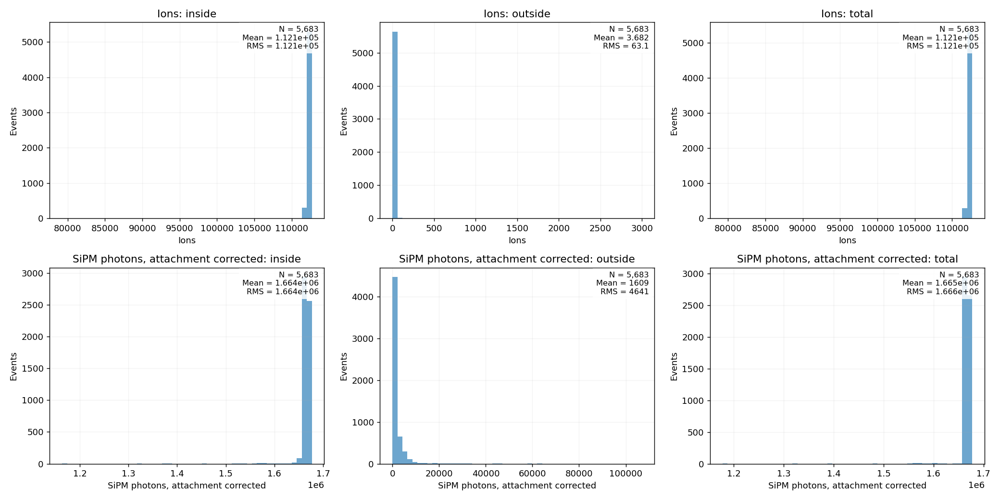
Ions: N × W. Photons: N × W / (EL yield × optical acceptance). Photon energies below are corrected for attachment using exp(drift time / lifetime), with the simulated event drift time and 30 ms lifetime.
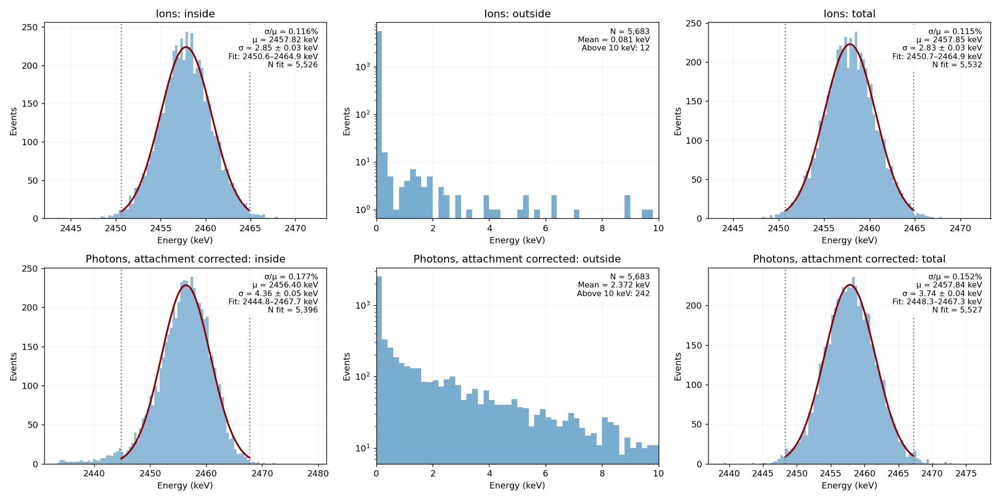
Gaussian peak fits use a fixed interval: median ± 2.5 × robust width (1.4826 × MAD). The likelihood includes the finite fit interval. Outside-energy plots show 0–10 keV; the mean uses all events.
| Readout | Energy | σ/μ, ±2 widths (%) | σ/μ, ±2.5 widths (%) | σ/μ, ±3 widths (%) |
|---|---|---|---|---|
| Ions | inside | 0.115 | 0.116 | 0.116 |
| Ions | total | 0.114 | 0.115 | 0.115 |
| Photons, attachment corrected | inside | 0.177 | 0.177 | 0.183 |
| Photons, attachment corrected | total | 0.150 | 0.152 | 0.153 |
The total includes photons outside the acquisition. Left: before attachment correction. Right: after correction.
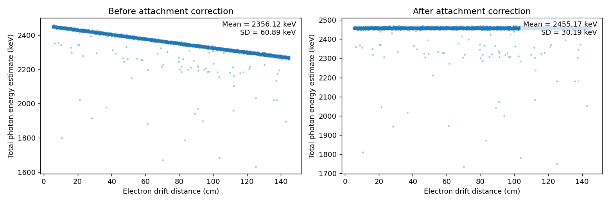
Whole channels are acquired. XY losses reach channels outside the acquired set. Time losses fall outside the acquisition interval. The total loss counts their overlap once.
| Readout | Loss | Affected events | Events (%) | Signal lost (%) |
|---|---|---|---|---|
| Ions | Outside channels | 117 | 2.059 | 0.002534 |
| Ions | Outside time interval | 52 | 0.915 | 0.000751 |
| Ions | Either | 160 | 2.815 | 0.003284 |
| SiPM photons | Outside channels | 3,935 | 69.242 | 0.084434 |
| SiPM photons | Outside time interval | 242 | 4.258 | 0.010555 |
| SiPM photons | Either | 3,956 | 69.611 | 0.094650 |
Each event contributes one mean and one maximum over positive pad/bucket or SiPM/bucket cells. Photon counts are corrected for attachment and are before PDE.
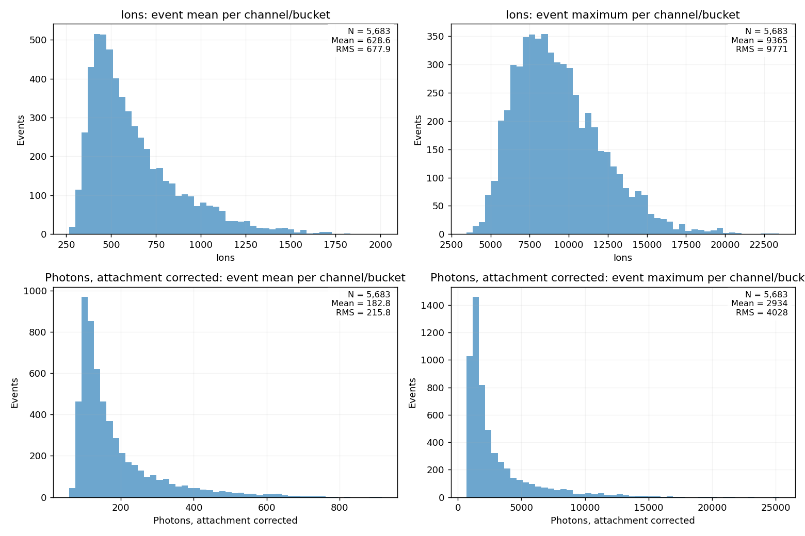
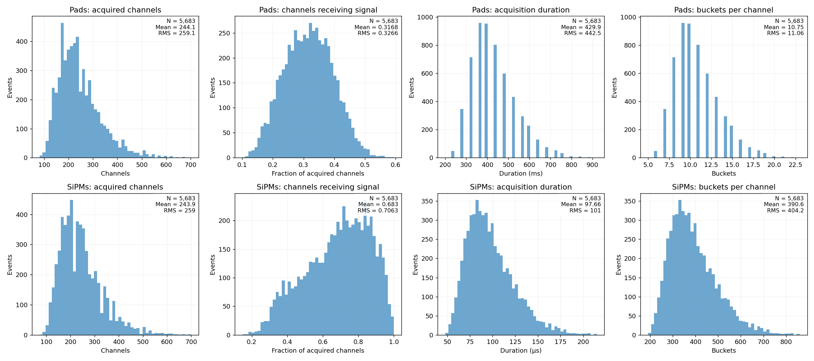
Photons are attachment corrected. Dashed black: event frame. Blue: acquired XY channel boundaries. Red crosses: excluded signal. Positions are relative to the MC vertex.
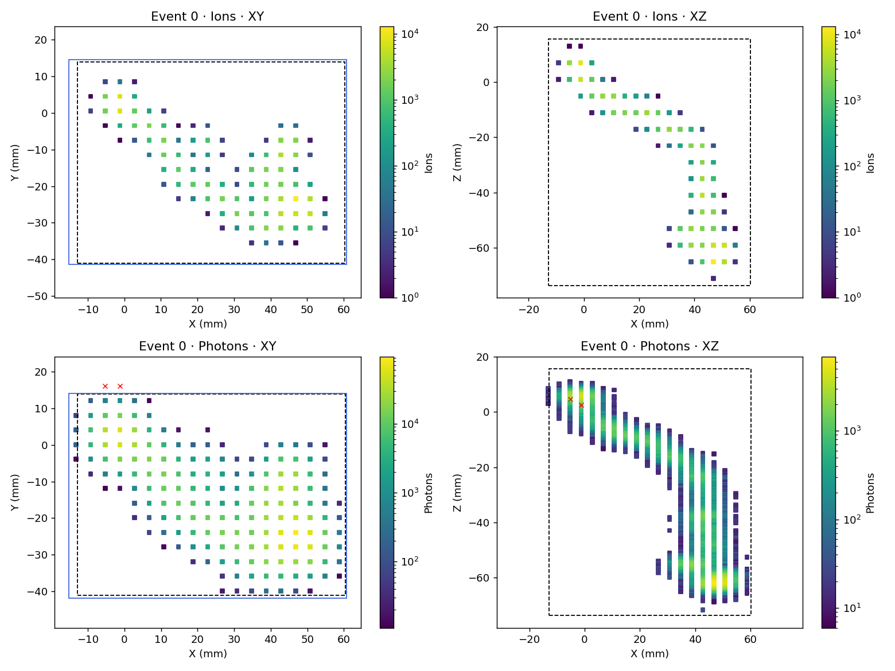
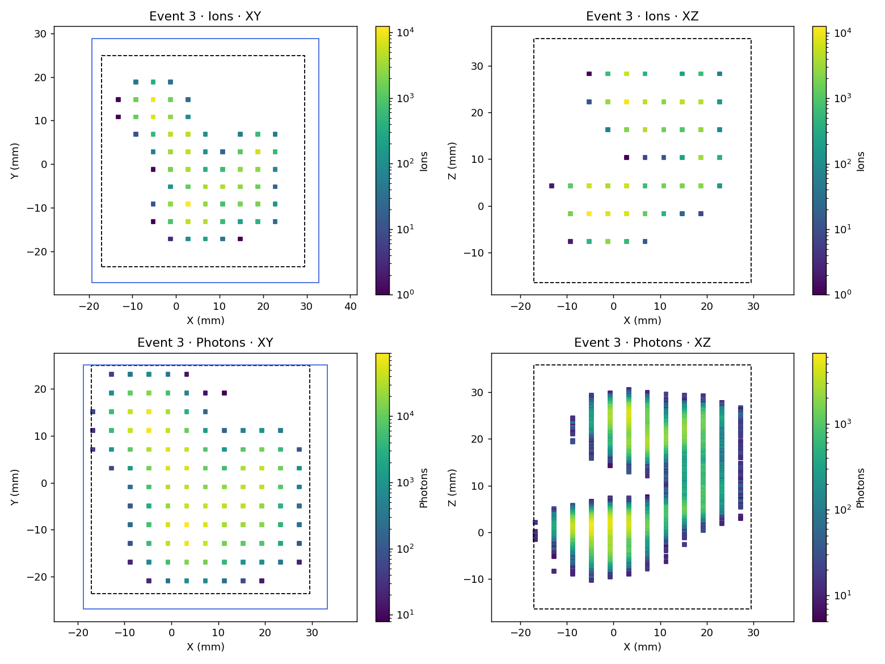
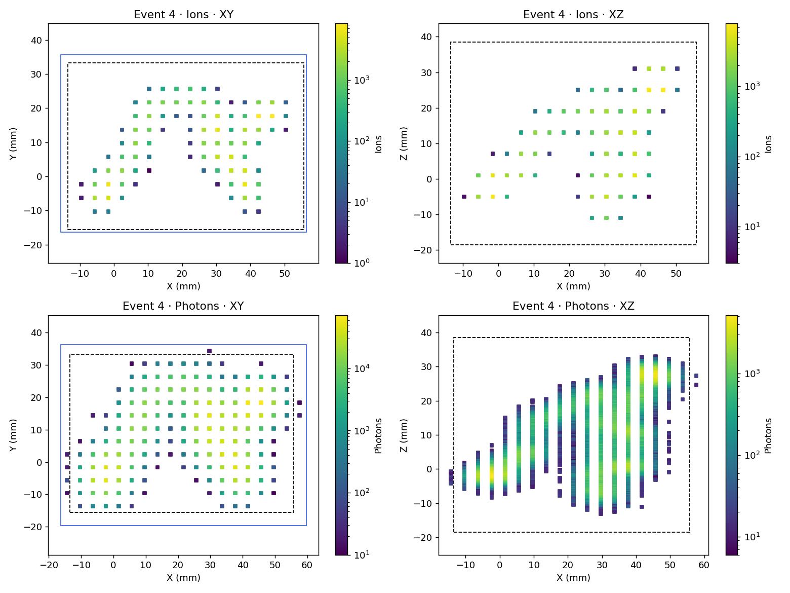
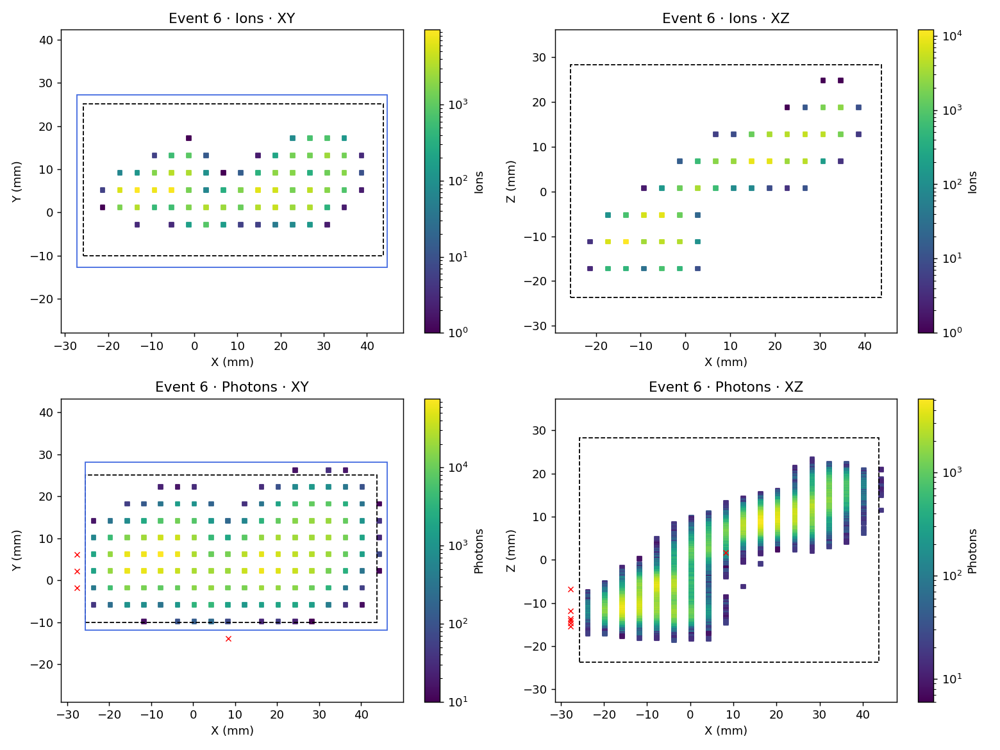
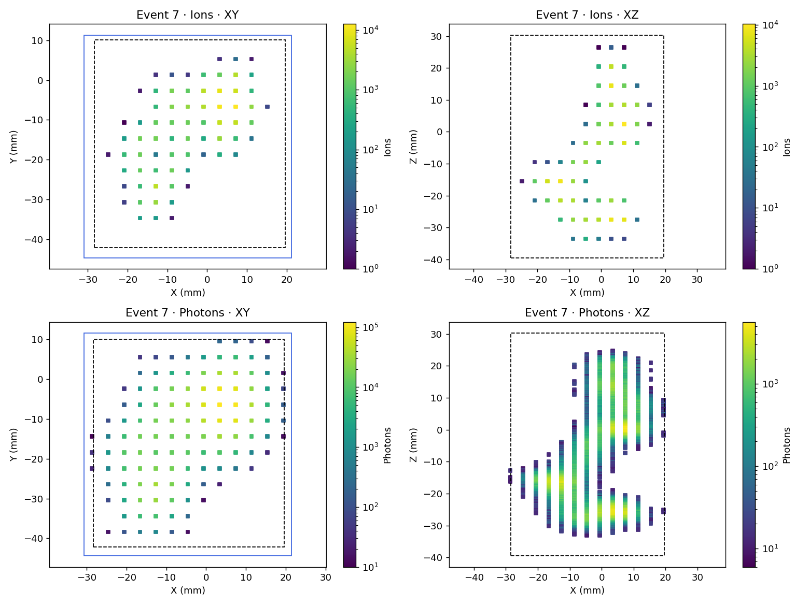
Photons are attachment corrected. Dashed black: event frame. Blue: acquired XY channel boundaries. Red crosses: excluded signal. Positions are relative to the MC vertex.
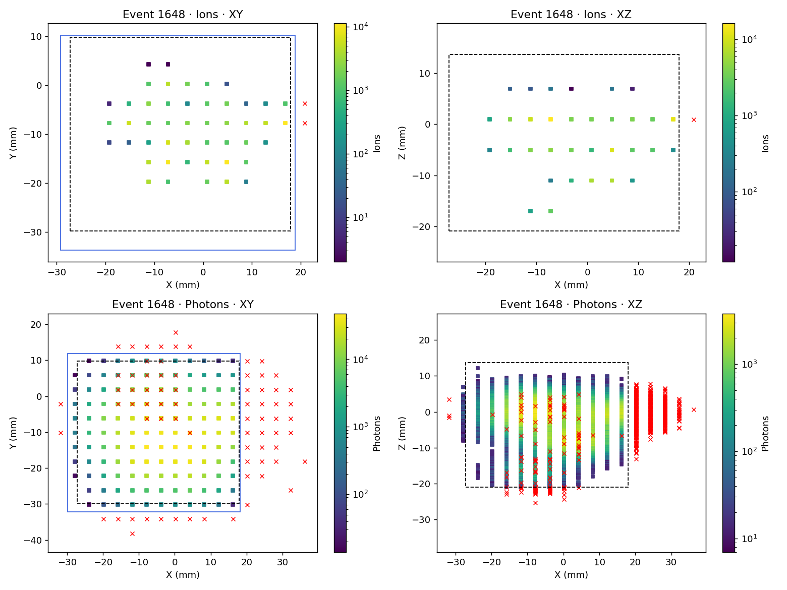
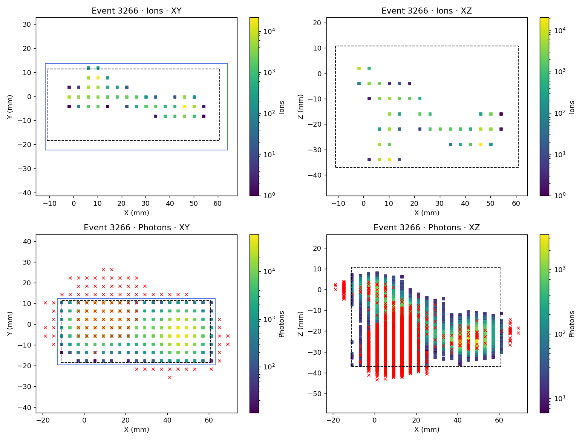
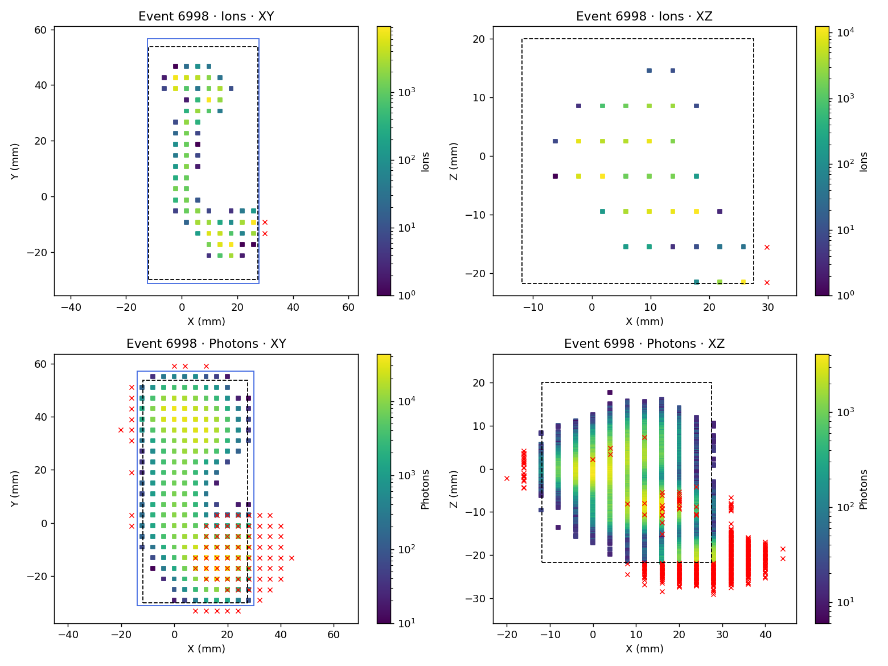
| Quantity | Time |
|---|---|
| Detector response, all accepted events | 52.6553 s |
| Mean per accepted event, excluding first compilation | 0.0092 s |
| Median per accepted event | 0.0085 s |
| Reading and selection | 3.5578 s |
| Complete Julia run, before final file publication | 62.2794 s |